The questions for this lab are embedded within the instructions.
Each question carries specific points, clearly indicated alongside it.
The questions have subsections within them.
The total score for this assignment is 20 points. Your final grade will be scaled from the total points you earn out of the maximum possible score to fit within a 0 to 20 scale.
When working on a lab, always create a dedicated folder for it and store all related files within that specific folder. For instance, avoid saving intermediate files in the C:/Documents directory; keep all materials organized and together.
Create a word document and name it as Lab-2-answers-YOURLASTNAME.docx. Insert each questions provided in this document and write down your answers for each questions. Upload the .docx file in Canvas. Do NOT upload a .pdf of the document.
Upload any additional file(s) required by this instructions in Canvas. You will find specific list of deliverables at the end of this page.
Despite an overall decline in crime, the bloodshed and violence continues in many of the City’s poorest neighborhoods. Frustrated and distressed, community and religious leaders are calling for immediate action. Citing studies linking alcohol to gang violence and to other violent crime, they are putting pressure on city and state officials to close liquor establishments, to decline new liquor license requests, and to reduce access to alcohol in the most violent neighborhoods. Meanwhile, local business owners are banding together, rallying to block the proposed restrictions. They cite violations of the fifth and fourteenth U.S. Constitutional Amendments and claim the proposed restrictions would negatively impact the social fabric and tourism of the City.
The Chief of Police is asking you, the Crime Analyst, to determine if there is indeed a relationship between violent crime and liquor establishments in your City. She wants your recommendations for an effective solution.
Since you are interested in violent crime, you collect data for the homicides, rape, robbery, aggravated assault, and aggravated battery incidents over the past year. Next, using ArcGIS Business Analyst, you obtain a dataset of businesses that either sell or serve alcohol (this includes bars, nightclubs, lounges, taverns, liquor stores, and so on). If you need additional data, you will use the data enrichment tools in ArcGIS to get it. Your point data is shown below.
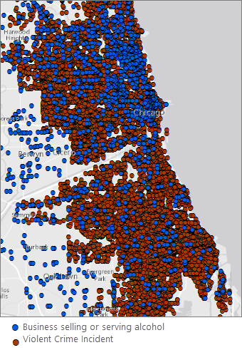
Fig. 40 Liquor vendors in blue; Violent crime incidents in brown. It is difficult to discern spatial patterns with so many points on the map.#
Where are the violent crime hot spots? Where are the hot spots for businesses selling or serving alcohol? Do they overlap?#
To make sense of the more than 22,000 crime points, and over 1,500 business points, you map them using hot spot analysis. These maps show you the statistically significant hot spots (red) and cold spots (blue) for violent crime and for liquor establishments. If violent crime is linked to liquor establishments, you expect to see spatial correspondence between their activity spaces.
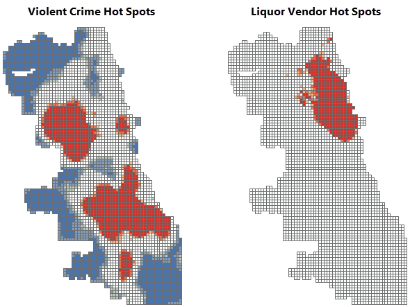
Fig. 41 Compare the violent crime and liquor vendor hot spot mapsv. The violent crime and liquor vendor hot spot maps look very different.#
You notice some overlap in the downtown area. To ensure that the remediation efforts you propose focus on your city’s most vulnerable neighborhoods, while avoiding areas that could impact tourism, you will need a better understanding of neighborhood poverty patterns within those overlap areas.
Where are the City’s most vulnerable neighborhoods?#
You obtain the data needed to create a hot spot map of poverty.
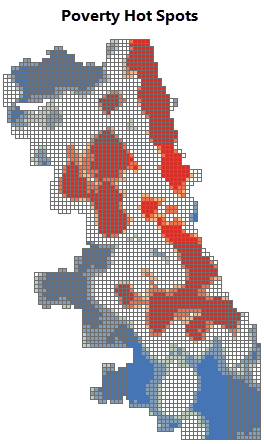
Fig. 42 Poverty hot spots. The red areas are statistically significant hot spots for poverty.#
Which areas should be included in a moratorium on new liquor licenses?#
You will recommend remediation measures for statistically significant hot spots (99 percent confidence) across all three variables: violent crime, existing liquor establishments, and poverty. To find these areas, you overlay all three maps, keeping only the hot spot locations that overlap.
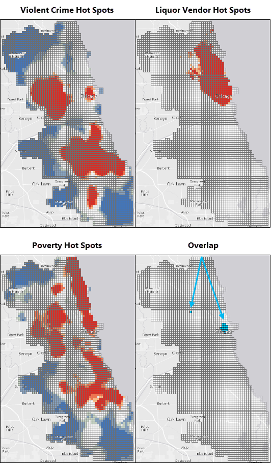
Fig. 43 Violent crime, liquor vendor, poverty hotspots and their overlaps.#
With the exception of the small overlapping areas identified above, you didn’t find a strong spatial correlation between violent crime and businesses that sell or serve alcohol.
Still, the community representatives have indicated that the problem is serious. While you work with numbers every day, you know that there are real faces—real people—behind your data. You decide to dig deeper.
Has violent crime been increasing in the City? If so, where?#
Space-time pattern mining will show you if violent crime has been increasing or not. The maps below show the results of this analysis. You notice several locations with intensifying violent crime hot spots and a number of persistent hot spots as well. Consecutive hot spots are also worrisome; these represent hot spot locations that have been statistically significant for several of the most recent time periods.
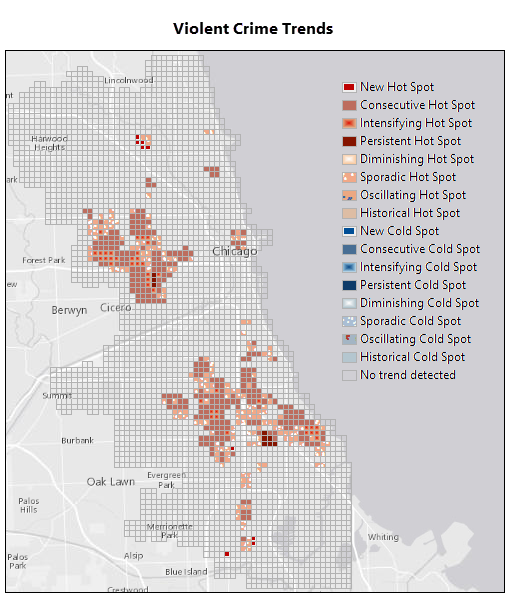
Fig. 44 Violent Crime Trends. There are several concerning trends including new, intensifying, and persistent hot spot areas.#
The 3D map below is zoomed in to the area of both sporadic and consecutive violent crime hot spot trends in the downtown area. The green squares at the base of the map delineate one of the liquor moratorium remediation areas you identified above. Each bin in the 3D stack represents a four-week time period, with the most recent time period at the top. The darkest red bins reflect locations and time periods with intense violent crime activity.
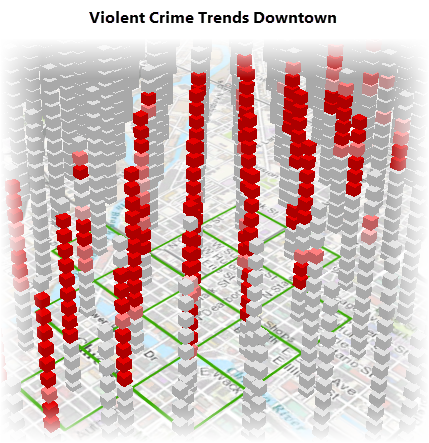
Fig. 45 3D view of violent crime trends downtown.#
There are definitely locations around the City where violent crime is persistent and even intensifying; most of these do not correspond to high densities of businesses serving or selling alcohol, however.
What else might be contributing to violent crime?#
Two years ago the City implemented a Summer Jobs Program that has proven tremendously effective at reducing violent crime. You obtain unemployment data and repeat your hot spot analysis to see if you find a stronger spatial correlation between unemployment and violent crime than you did between liquor establishments and violent crime. Interestingly, you do.
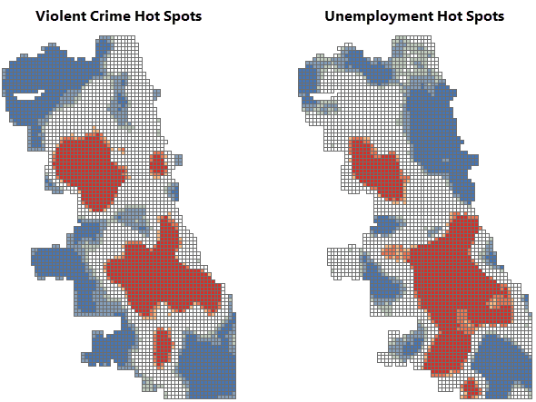
Fig. 46 Compare the violent crime and unemployment hot spot maps. There are a number of locations where the violent crime and unemployment hot spots overlap.#
Where do persistent, intensifying, and consecutive hot spots overlap with unemployment hot spots?#
You will recommend remediation measures for the areas where persistent, intensifying, and consecutive hot spot trends overlap with the statistically significant unemployment hot spots (99 percent confidence).
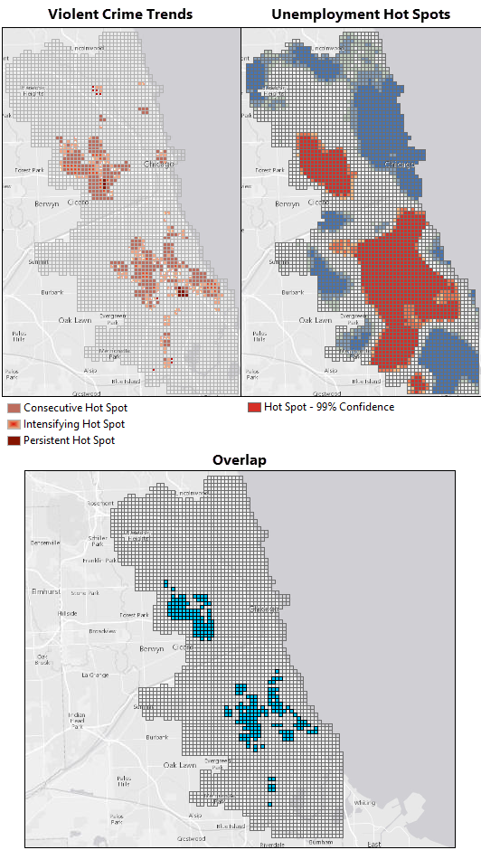
Fig. 47 Overlap between violent crime trends and unemployment hot spots. The blue areas are the locations where intensifying, persistent, and consecutive hot spot trends overlap with the most intense unemployment hot spots.#
Which specific high schools should be targeted for an expanded summer jobs program?#
You identify high schools within a quarter mile of the remediation areas where high violent crime and high unemployment overlap.
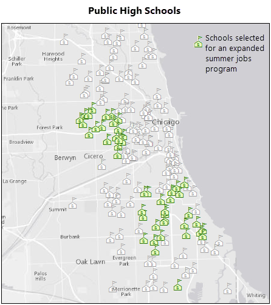
Fig. 48 Selected schools. You will recommend that several schools be included in an expanded summer jobs program.#
Your analyses have gone well! You have several recommendations to propose to the Chief of Police.
Your final report will include the map above showing your recommendations below.
Areas with high densities of violent crime, businesses selling or serving alcohol, and poverty. Suggested remediation: Review the existing liquor licenses for violations. Impose a moratorium on new liquor licenses.
Areas with intensifying or persistent violent crime and high unemployment rates. Suggested remediation: Add the public high schools within 0.25 miles of these areas to the existing summer jobs program. Consider a PR campaign to make people aware of the tremendous success this program has had on reducing violent crime over the past two years.
New violent crime hot spots. Suggested remediation: Assign officers to work with residents and community advocates in these areas to understand what’s behind the sudden increase in violent crime and hopefully keep violent crime in these areas from becoming endemic.
If you haven’t done so already, download and unzip the data package provided at the top of this workflow.
Open ArcGIS Pro and browse to the BrokenBottlesPkg.ppkx project package.
Open the Attribute Table of ViolentCrime2014 layer and explore the data.
Question 1
a. What Primary Type crimes have been reported in the data? (Note that I am not asking for the total number of crime, I am asking how many classes of primary types crime has been reported in this dataset?) <1 pt>
b. Which primary type of crime is the most frequent in the area and what is the number? <1 pt>
a. Which neighborhood had the highest number of robberies and what was the number? <1 pt>
b. Which primary type of crime is the most frequent in the area and what is the number? <1 pt>
c. How did you get these information? Please explain in few sentences about the approach you took. (There are multiple ways to do it, you just need to explain the one you did.) <3 pt>
Once the project opens, find and open the Optimized Hot Spot Analysis tool. If the Geoprocessing pane isn’t open, click the Analysis menu tab, then click the Tools button. (Tips: Whenever possible and appropriate, create your workflow output in a geodatabase rather than as a shapefile. Field names in shapefile output may be truncated, and there are other advantages to using a geodatabase to store your data.)
Run the Optimized Hot Spot Analysis tool with the following parameters. The Analysis Boundary layer defines the study area.
Input Features : ViolentCrime2014
Output Features : the name of your output feature class such as ViolentCrimeHotSpots
Incident Data Aggregation Method : Count incidents within fishnet grid
Bounding Polygons Defining Where Incidents Are Possible : AnalysisBoundary
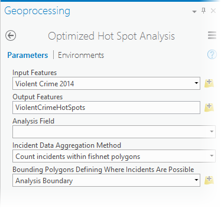
Fig. 53 Optimized Hot Spot Analysis tool parameters for Violent Crime 2014.#
While the tool runs, it reports the cell size it used for aggregation and the distance it used for analysis (the scale of the analysis). To see this information, hover over the progress bar below the Geoprocessing pane and click the icon to pop out the progress messages. You may resize the message pane by pulling on the lower right corner of the pop out window.
Notice that for this analysis the cell size is 1,375 feet and the scale of analysis is 4,563 feet (4,554 Feet with the most current software).f you are comparing multiple hot spot maps, you will want to make sure that the study area, cell size, and scale of analysis all match.
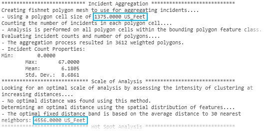
Fig. 55 Optimized Hot Spot Analysis message output.#
a. You used Countincidentswithinfishnetgrid as the Incident Data Aggregation Model. What is fishnet? <1 pt>
b. Similarly there is another option called Countincidentswithinhexagongrid. Create another Hot Spot map using hexagon grids and look at the differences. In your words, explain when Hexagons can be useful. (Hint: Explore here to find out more.) (Note: For the rest of the analysis, do not use the hot spot results from hexagon, use it from the fishnet.) <2 pt>
Use the Optimized Hot Spot Analysis tool again with the following parameter settings. You will use the output from the violent crime hot spot analysis to define the study area and cell size.
Input Features : LiquorVendors
Output Features : the name of your output feature class such as LiquorVendorHotSpots
Incident Data Aggregation Method : Count incidents within aggregation polygons
Polygons For Aggregating Incidents Into Counts : ViolentCrimeHotSpots
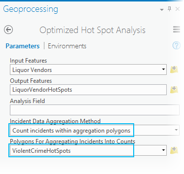
Fig. 57 Optimized Hot Spot Analysis of liquor vendors, tool parameters.#
Note: Because you used the exact same study area for both analyses, the scale of analysis should match exactly. Be sure to check it, though. Sometimes, when the distributions of points are vastly different, there will be a mismatch. If you do see a mismatch, run Hot Spot Analysis on the output from Optimized Hot Spot Analysis, setting the Distance Band or Threshold Distance parameter explicitly to match the hot spot map you want to compare.
Now you can compare the hot spot maps to see where their activity spaces overlap.
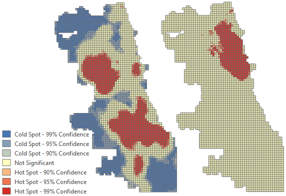
Fig. 58 Violent crime and liquor vendor hot spot maps.#
Question 4
a. Why did you use Countincidentswithinaggregationpolygons in this case? What would have been happened if you created the hot spot map the same way you did for the Violent Crime layer? <2 pt>
While you may use the Enrich Layer tool to get poverty data, to ensure your results match those below and to avoid consuming credits, use the data provided in the data package you downloaded. The Enrich Layer tool always gives you the most current data available. When this workflow was created, the ACS poverty data was for 2009-2013.
Navigate to Poverty.lpk included with the data package you downloaded. Drag it on the map.
Find and open the Optimized Hot Spot Analysis tool a third time.
Set the parameters as follows and run the analysis.
Input Features: Poverty
Output Features: the name of your output feature class such as PovertyHotSpots
Fig. 59 Violent crime and liquor vendor hot spot maps.#
Overlay the hot spot maps to determine areas of overlap#
Find and open the Select Layer By Attribute tool. You will run the tool on all three hot spot maps, each time selecting records where the Gi_Bin field is equal to 3 (a three for this field indicates a statistically significant hot spot at the 99 percent confidence level). The Gi_Bin field name will reflect the scale of analysis (4554 for the most current version of the software).
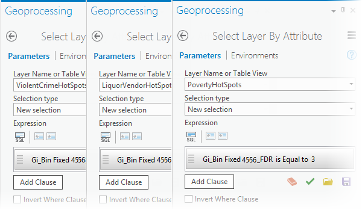
Fig. 60 Select the most intense violent crime, liquor vendor, and poverty hot spots.#
Next, find and open the Intersect tool. Add all three layers as Input Features, provide a name for the output, such as iCrimeLiquorPoverty, and run the analysis.
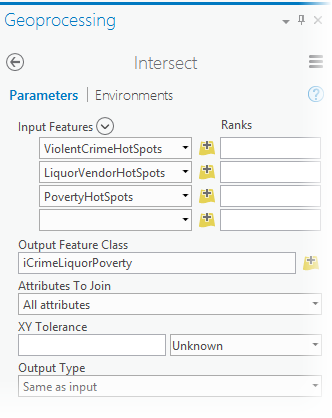
Fig. 61 Find the intersection between the violent crime, liquor vendor, and poverty 99 percent confidence level hot spots.#
Clear the selections, and turn off all other layers in order to see the output showing the overlapping locations. These locations will be your proposed areas for a liquor moratorium.
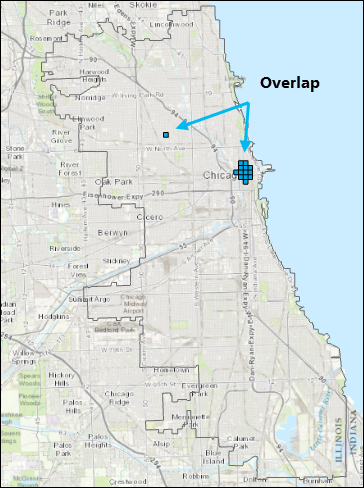
Fig. 62 Areas where the violent crime, liquor vendor, and poverty hot spots overlap.#
Create a space-time cube and analyze the crime trends within it#
For version 1.4 or later of ArcGIS Pro, to ensure the cube output aligns with the hot spot output, you must set the Processing Extent to match the Analysis Boundary layer. Click the Environments tab and change the Extent to Analysis Boundary.
Set the Create Space Time Cube Parameters as follows and run the analysis. The cube is a netCDF file, so it must be created in a folder rather than inside a file geodatabase. Setting the Distance Interval to match the hot spot map cell size will allow you to overlay the crime trends with hot spot maps later. For version 1.4 of ArcGIS Pro only, you must convert 1375 US Feet to 1375 International Feet (1375.00275).
Input Features: ViolentCrime2014
Output Space Time Cube: the name of your output cube such as ViolentCrimeCube.nc
Time Field: Date
Time Step Interval: 4Weeks
Time Step Alignment: Endtime
Distance Interval: 1375Feet; for version 1.4 and 2.0 of ArcGIS Pro only, use 1375.00275 instead (see note below).
Note:
With version 1.4 and 2.0 of ArcGIS Pro, the space time cube will not align with the output from Optimized Hot Spot Analysis unless the cell size is entered in US Feet. US Feet are slightly larger and have more precision that International Feet. With later versions of the software, Feet parameters will automatically be interpreted as US Feet.
Caution:
If you want a valid space-time analysis of incident data (like crime events), make sure each bin in the space-time cube is exactly the same size. Selecting Months for the Time Step Interval, for example, will result in some bins having more days than others (31 days for March, but only 30 days for April). This will bias your analysis because months with more days will likely have more incidents. Use Days, Weeks, or Years instead of Months.
Tip:
Use the EndtimeTime Step Alignment. If the incident range of dates doesn’t divide evenly into your Time Step Intervals, you want the bias to be associated with the first (oldest) time period rather than the last (most recent) time period. For example, suppose your data covers fifteen and a half weeks and you select 1week for your Time Step Interval. If you select Starttime for the Time Step Alignment, all of the bins will have a full week, except the bins for the last (most recent) time period; it will only have half a week.
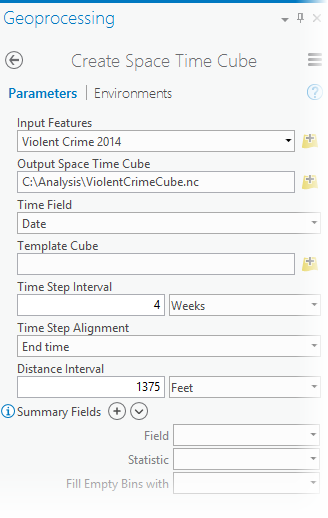
Fig. 64 Create Space Time Cube tool parameter settings.#
The tool will report it completed successfully but will not add new layers to the map.
Question 5
a. In a few sentence, explain NetCDF files and when it is useful? (Hint: google it and try to learn more about NetCDF data.) <2 pt>
Set the following parameters and run the analysis.
Input Space Time Cube: ViolentCrimeCube.nc
Analysis Variable: COUNT
Output Features: the name of your output feature class such as ViolentCrimeTrends
Neighborhood Distance: 0.5Miles
Neighborhood Time Step: 1
Polygon Analysis Mask: AnalysisBoundary
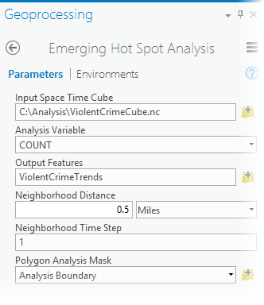
Fig. 65 Emerging Hot Spot Analysis tool parameter settings.#
Examine the results. The trend categories are defined as follows.
Pattern Type
Definition
New Hot Spot
A location that is a statistically significant hot spot for the final time step and has never been a statistically significant hot spot before.
Consecutive Hot Spot
A location with a single uninterrupted run of statistically significant hot spot bins in the final time-step intervals. The location has never been a statistically significant hot spot prior to the final hot spot run and less than ninety percent of all bins are statistically significant hot spots.
Intensifying Hot Spot
A location that has been a statistically significant hot spot for ninety percent of the time-step intervals, including the final time step. In addition, the intensity of clustering of high counts in each time step is increasing overall and that increase is statistically significant.
Persistent Hot Spot
A location that has been a statistically significant hot spot for ninety percent of the time-step intervals with no discernible trend indicating an increase or decrease in the intensity of clustering over time.
Diminishing Hot Spot
A location that has been a statistically significant hot spot for ninety percent of the time-step intervals, including the final time step. In addition, the intensity of clustering in each time step is decreasing overall and that decrease is statistically significant.
Sporadic Hot Spot
A location that is an on-again-off-again hot spot. Less than ninety percent of the time-step intervals have been statistically significant hot spots and none of the time-step intervals have been statistically significant cold spots.
Oscillating Hot Spot
A statistically significant hot spot for the final time-step interval that has a history of also being a statistically significant cold spot during a prior time step. Less than ninety percent of the time-step intervals have been statistically significant hot spots.
Historical Hot Spot
The most recent time period is not hot, but at least ninety percent of the time-step intervals have been statistically significant hot spots.
New Cold Spot
A location that is a statistically significant cold spot for the final time step and has never been a statistically significant cold spot before.
Consecutive Cold Spot
A location with a single uninterrupted run of statistically significant cold spot bins in the final time-step intervals. The location has never been a statistically significant cold spot prior to the final cold spot run and less than ninety percent of all bins are statistically significant cold spots.
Intensifying Cold Spot
A location that has been a statistically significant cold spot for ninety percent of the time-step intervals, including the final time step. In addition, the intensity of clustering of low counts in each time step is increasing overall and that increase is statistically significant.
Persistent Cold Spot
A location that has been a statistically significant cold spot for ninety percent of the time-step intervals with no discernible trend, indicating an increase or decrease in the intensity of clustering of counts over time.
Diminishing Cold Spot
A location that has been a statistically significant cold spot for ninety percent of the time-step intervals, including the final time step. In addition, the intensity of clustering of low counts in each time step is decreasing overall and that decrease is statistically significant.
Sporadic Cold Spot
A location that is an on-again-off-again cold spot. Less than ninety percent of the time-step intervals have been statistically significant cold spots and none of the time-step intervals have been statistically significant hot spots.
Oscillating Cold Spot
A statistically significant cold spot for the final time-step interval that has a history of also being a statistically significant hot spot during a prior time step. Less than ninety percent of the time-step intervals have been statistically significant cold spots.
Historical Cold Spot
The most recent time period is not cold, but at least ninety percent of the time-step intervals have been statistically significant cold spots.
No Trend Detected
Does not fall into any of the hot or cold spot patterns defined above.
Navigate to Unemployment.lpk included with the data package you downloaded. Drag it onto the map.
Note: The Enrich Layer tool always gives you the most current data available. When this workflow was created, the unemployment rate data was for 2015.
Overlay the violent crime trend map with the unemployment rate hot spot map to determine areas of overlap#
Find and open the Select Layer By Attribute tool. You will use it once to select intensifying, persistent, and consecutive hot spots (Pattern Type COUNT is Equal to ConsecutiveHotSpot Or Pattern Type COUNT is Equal to IntensifyingHotSpot Or Pattern Type COUNT is Equal to PersistentHotSpot) and a second time to select the most intense unemployment rate hot spots (Gi_Bin Fixed 4556_FDR is equal to 3).
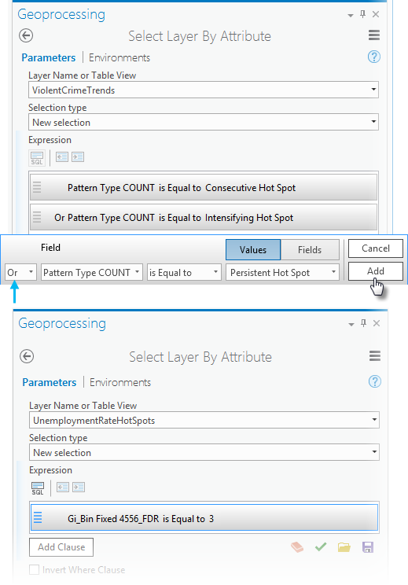
Caution:
Be sure to click the Add button after creating the expression, otherwise all the features in the layer will be selected.
Next, find and open the Intersect tool. Add the violent crime trends and unemployment rate hot spot maps with their active selections, provide a name for the output results such as iCrimeUnemp, and run the analysis.
Use the Copy Features tool to copy the selected high schools to a new feature class (this is optional, but it makes mapping and creating reports a bit easier).
Input Features: PublicHighSchools
Output Feature Class: the name of your output feature class such as SelectedHighSchools
Question 6
a. Create your Final Crime Remediation Area with necessary legends and basemap layers. Use proper mapping tools in your map. <6 pt>
You will do a similar analysis like the above for Saint Louis Crime patterns. I want you to slowly familirize yourself with Open-source Python solutions for different data processing tasks. Therefore, the data cleaning steps are already done for you in this notebook. You do not have to run the codes in the notebook, but feel free to familirize with the modules and functions used here to understand the general notion of data processing tasks.
a. Create an overlap of crime hot spots, liquor store hot spots and income cold spots. Publish a nice map with necessary attributes and other information. <20 pt>